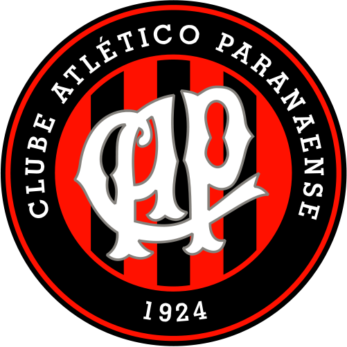
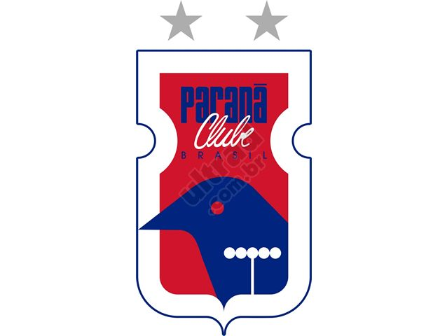

Coxa, Atlético e Paraná estreiam na Copa do Brasil Sub-17
Coritiba, Atlético e Paraná entram em campo neste fim de semana pela Copa do Brasil Sub-17. O torneio segue os moldes da sua versão profissional, com duelos de mata-mata desde a primeira fase. A disputa envolve 32 clubes em confrontos de ida e volta. O time que for campeão terá superado cinco adversários ao longo do campeonato.
O Coxa recebe o Flamengo neste sábado (21), às 14 horas, no Ecoestádio Janguito Malucelli.
O treinador da equipe, Anderson Gongora, faz os últimos ajustes no grupo para definir quem entra em campo.
“As expectativas são boas porque esse grupo vem jogando junto há um bom tempo. Podemos chegar longe”, aponta.

O Furacão enfrenta o Botafogo. Sem Juliano, Riuler e Zé Marcos, que estão jogando pela seleção
brasileira da categoria, o técnico Gustavo Silva espera por um adversário técnico e veloz no Engenhão.
“Podemos esperar um adversário forte e que vem de conquistas. Será um jogo bem competitivo”, opina.

O Paraná faz sua estreia no domingo (22). Na Vila Capanema, o Tricolor recebe o Atlético-MG
a partir das 16 horas. Mathias Lamers, coordenador das equipes de base paranista, destaca que a maioria dos jogadores já vem atuando junto de temporadas passadas, mas que o adversário é favorito.
“Sabemos da qualidade deles, que são os atuais campeões. Temos um coletivo, é um time que não tem um ou dois valores individuais, mas que trabalha pelo conjunto”.